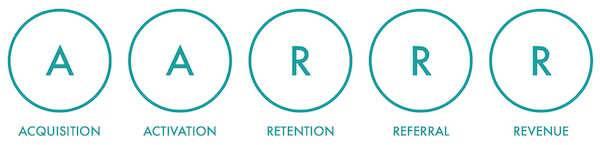

AARRR est un framework de la Lean Enterprise Institute développé par Dave McClure, un entrepreneur et investisseur dans plus de 500 start up à travers le monde. Basé sur cinq étapes, l'AARRR met en place plusieurs objectifs cruciaux sur lesquels les entreprises doivent se concentrer pour développer une croissance durable.
Le but est ici d'acquérir de nouveaux utilisateurs en déployant des techniques de référencement principalement gratuites telles que le SEO (Search Engine Optimization) puis SEA (Search Engine Advertising) afin de générer du trafic.
Pour se faire, il faut privilégier les canaux apportant le plus d'utilisateurs et surtout dont le taux de retour sur investissement est le plus positif.
Après avoir investi dans l'acquisition de trafic, le but est ensuite de convertir les visiteurs en prospects. L'enjeu est ici de savoir suffisamment donner envie au visiteur de revenir sur votre site grâce à plusieurs outils.
Par exemple, le visiteur peut susciter un désir pour votre offre grâce à l’inscription à un compte utilisateur ou à une newsletter. La présence de genre de fonctionnalités se répercute tout de suite sur la durée moyenne d'une session et le nombre de pages visitées.
Maintenant que vos visiteurs sont devenus des prospects, l'enjeu réside désormais dans la conversion en utilisateurs actifs. Plus vos utilisateurs sont actifs, plus ils ont de la valeur.
Pour cela, il faut chercher à améliorer la fréquence de leur activité. Les campagnes d'emailing ciblé ainsi qu'une publication régulière sur vos pages de réseaux sociaux ou un blog ont souvent un impact considérable sur le nombre de visites par mois.
Désormais, l'objectif est d'augmenter le nombre d'utilisateurs en transformant les utilisateurs actifs en ambassadeurs. Le but est de mesurer et d'augmenter la viralité par le nombre de partage par utilisateur.
Le partage social est le levier le plus utilisé, tant pour sa gratuité que pour son efficacité. Les offres de parrainage ou de récompense sont aussi souvent sollicitées.
Une fois que les étapes précédentes ont bien été respectées et lancées, vous pouvez vous concentrer sur la génération de revenus. L'outil principal est l'amélioration du taux de conversion des utilisateurs en clients/ambassadeurs.
Plusieurs facteurs permettent d'améliorer ce taux comme des promotions, la structure des prix ou encore de l'offre, la publicité ou l'amélioration du revenu moyen par client grâce aux options premium.
Nous contacter